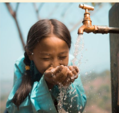
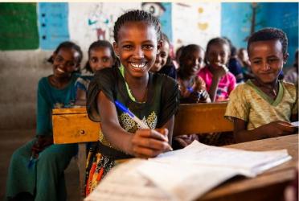
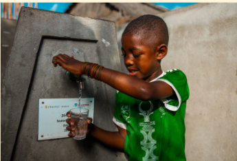

OUR MISSION
Clean water changes everything.
Access to clean water can improve health, create opportunities, and help communities build brighter futures.
Your support can help bring clean water, education, and opportunity to communities in need.



OUR MISSION
Access to clean water can improve health, create opportunities, and help communities build brighter futures.
THE IMPACT
Clean water helps communities stay healthier and reduces preventable water-related illness.
Reliable water access gives students more time and opportunity to attend school.
Clean water gives families more opportunities to work, learn, and build stronger communities.
REAL STORIES. REAL CHANGE.
Every clean water project can help create lasting change for individuals, families, and entire communities.
Join the movement and help bring clean water to communities around the world.
GIVE CLEAN WATER